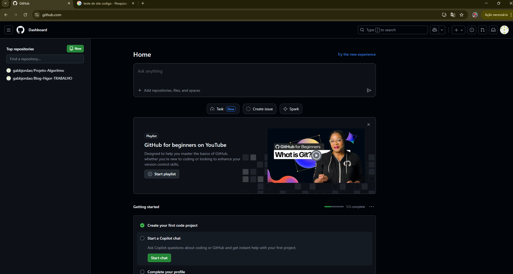
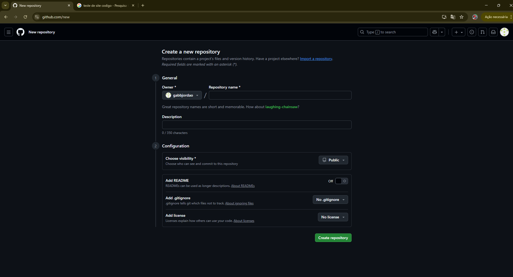
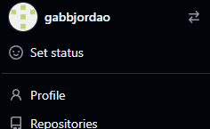
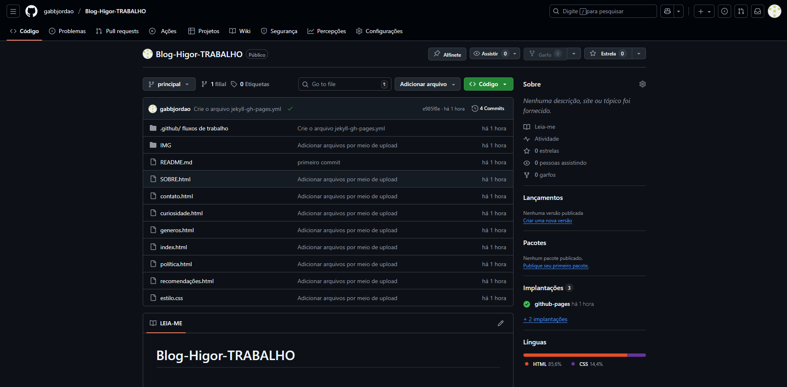
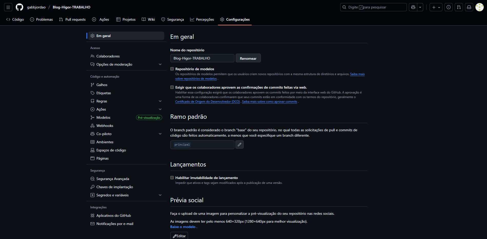
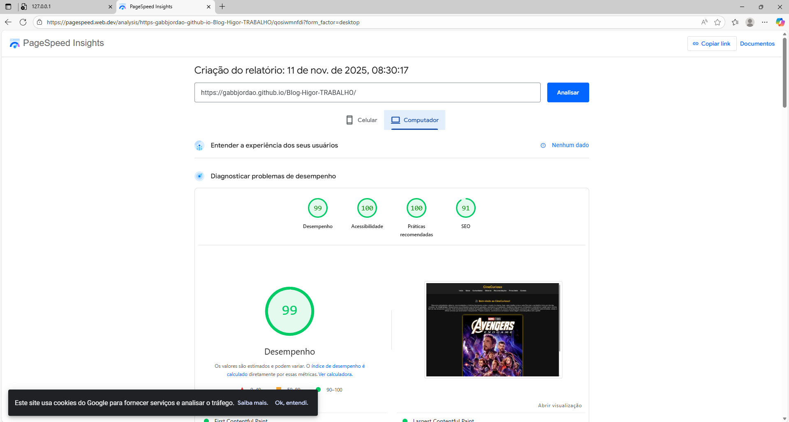
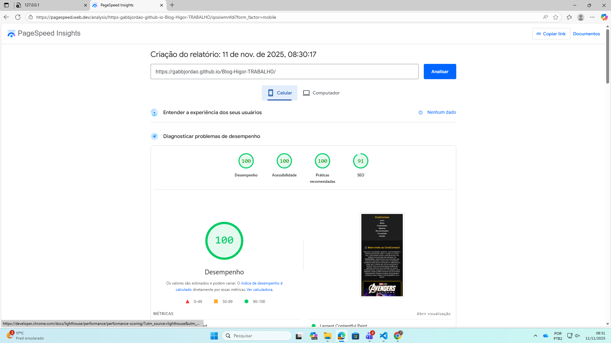

1️ - Aperte em "Novo".

2️ - Crie um Novo Repositório.

3️ - Vá em "Repositório" e arraste seu arquivo para o GitHub.

4️ - Depois vá em "Configurações" e depois clique em "Páginas" nas Configurações.

5️ - E pronto, agora só fazer o teste do seu Site.

6 - Acesse o Site Page Speed e Faça o teste do seu site

7 - Acesse o Site Page Speed e Faça o teste do seu site
